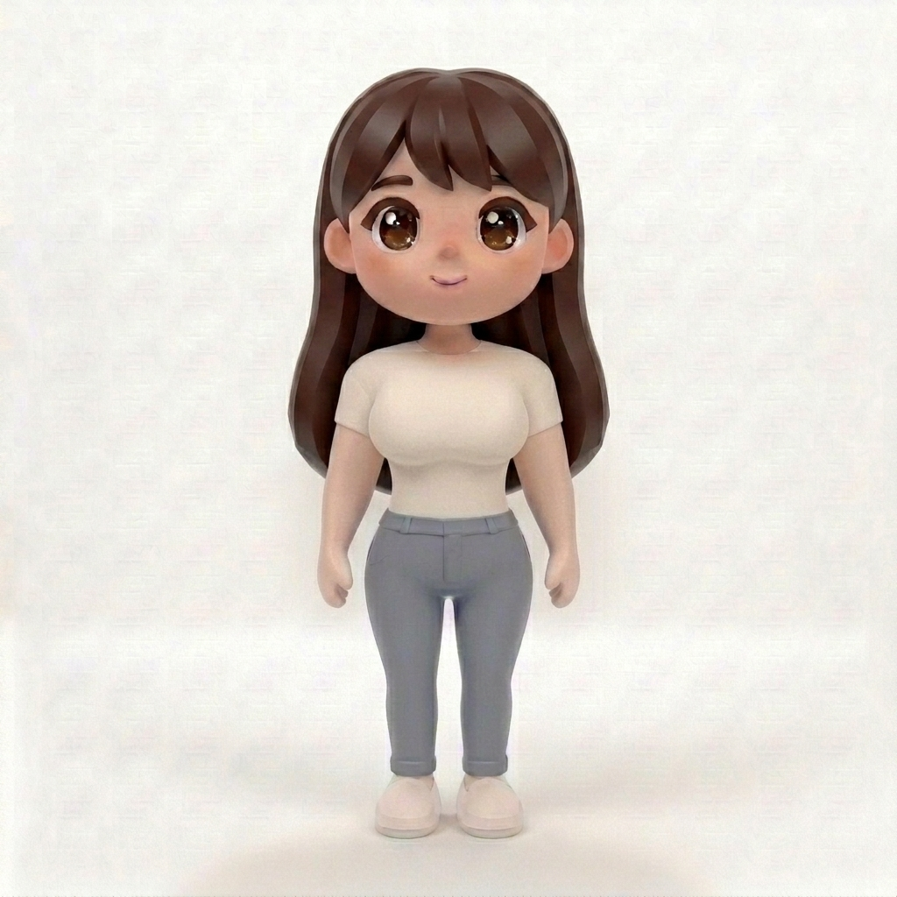
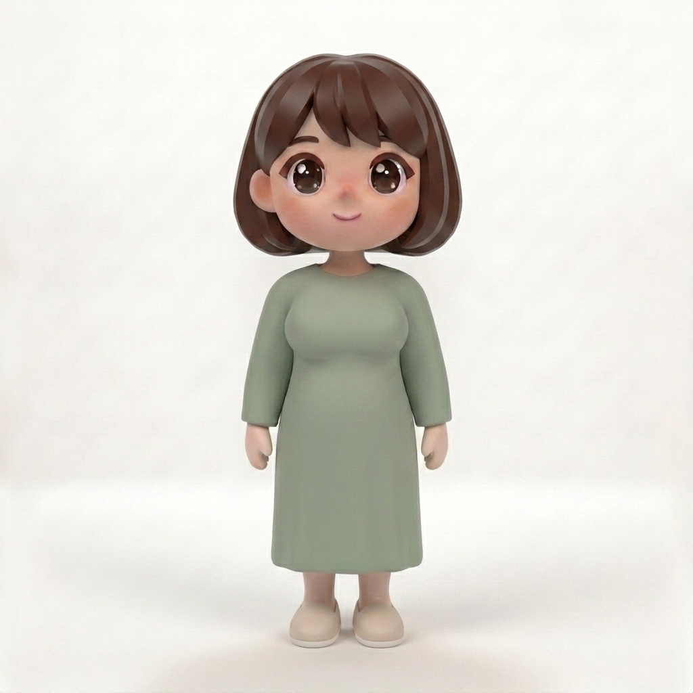
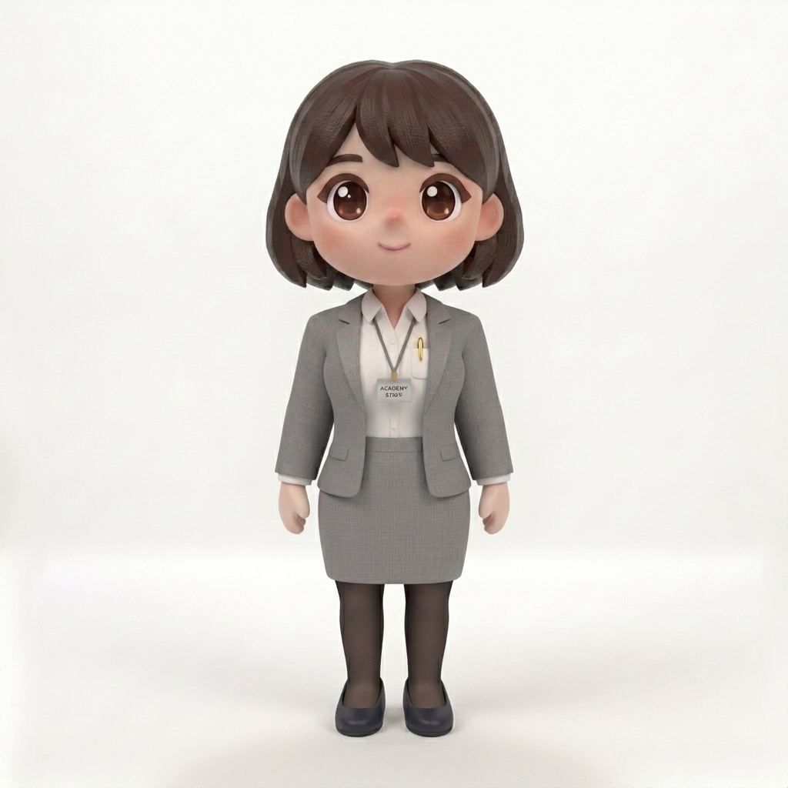
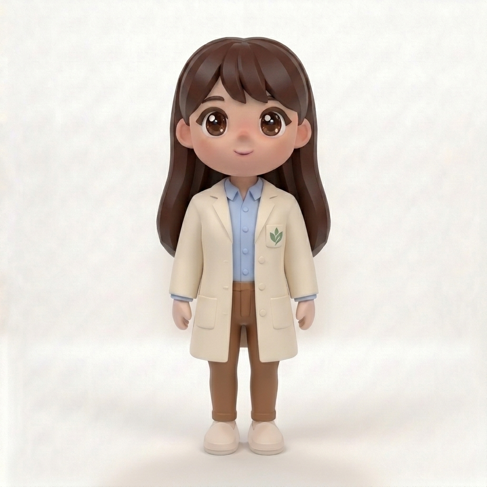
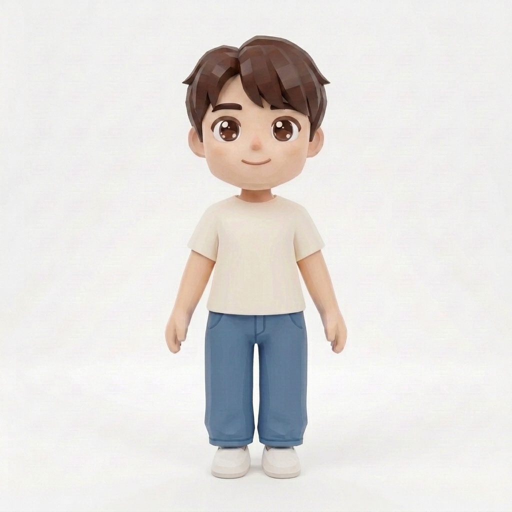
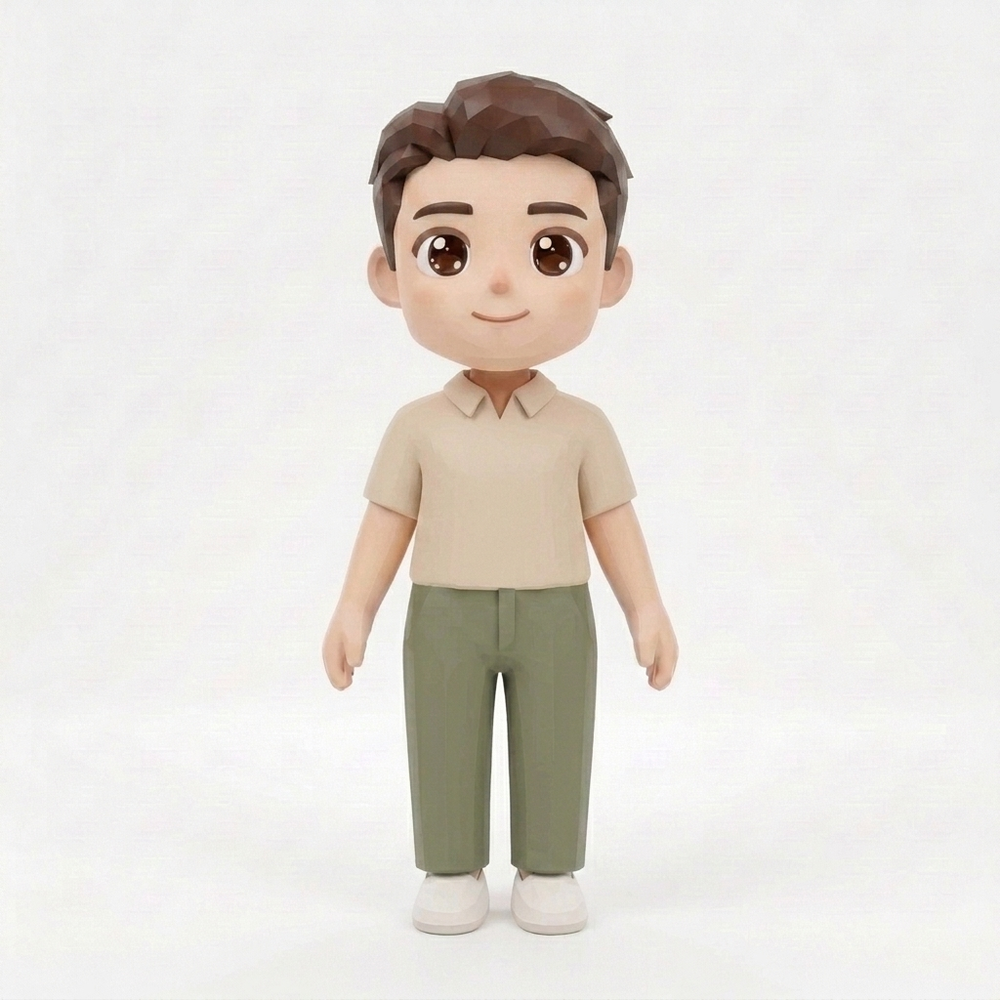
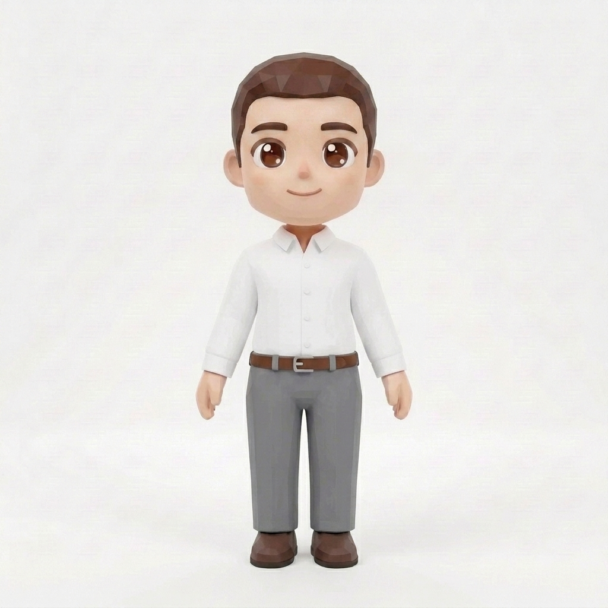
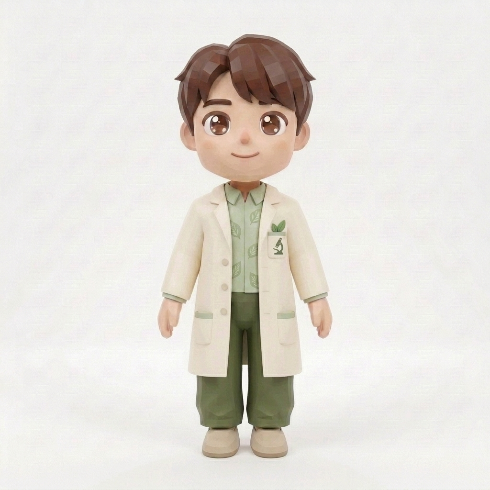

볕 · 플레이어 8종 — 찐갈색 머리/눈썹/눈 (새 원화)
머리·눈썹·눈만 딥 초콜릿 브라운으로 재생성. 얼굴·옷·비율·화풍 동일.

여 · 자취생긴생머리 · 크림티+데님

여 · 주부단발 · 세이지 원피스

여 · 가장단발 · 회색 치마정장+검스

여 · 연구자긴생머리 · 연구가운

남 · 자취생덴디컷 · 크림티+데님

남 · 주부스포츠컷 · 카라티+팬츠

남 · 가장스포츠컷 · 와이셔츠+슬랙스

남 · 연구자덴디컷 · 연구가운